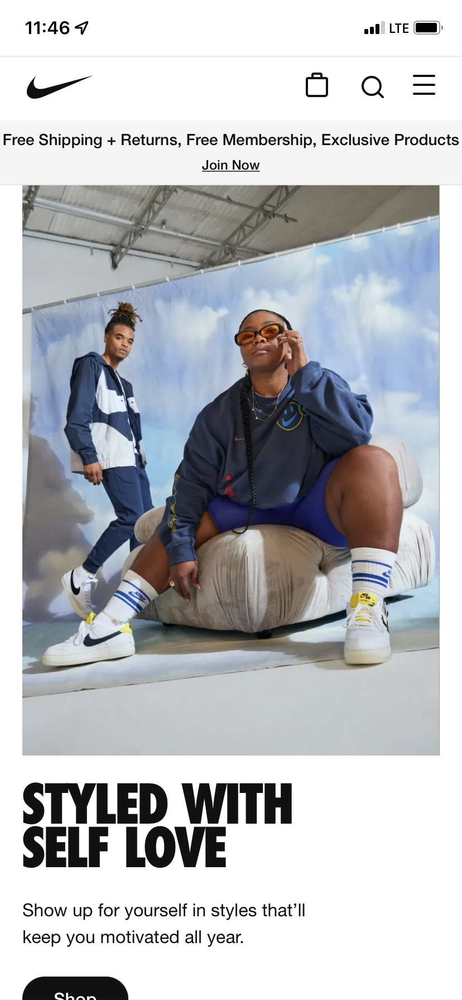

Nike Website
Nike.com I chose the Nike website for visual hierarchy because it's a good example of visual hierarchy in marketing online. The webpage opens, and it uses contrast and color to direct your eyes to the new products being advertised, like the yellow in the shoes. The alignment is interesting too, because instead of centering everything, it pushes the text and various buttons to the left side of the screen. Between all the elements combined, like the proximity and the white space and the texture of the fabric behind them, it all combines into a successful marketing campaign, and I think that it's cool that they not only used visual hierarchy to create a good looking website, but used it to market their products as well. Successfully because it got me to look through their catalog.
Apple Website
Apple.comI picked the apple website for whitespace because of how much of it there was on the main page. If we ignored the notification on top, which I think is obnoxious and slightly bad design becuase of how wordy it is, then the center where it's advertising the iPhone 13 Pro has a total of only nine words and one picture. The macrospacing is well done, and it leaves a lot of room for whitespace. Because it's the only thing, it makes you want to select it more than anything else. The white space also gives you a very quick call to action with the Learn More link and the Buy link, and everything else is designed to make you want to select one of those two things.
Squarespace
Squarespace.comI picked the squarespace website to demonstrate the P.A.R.C. principles. These stand for proximity, alignment, repetition, and contrast. I picked this website because in my head, if there were a website to show how a website should be made, it would probably be the website used to make websites. Everything is well spaced, far enough that it doesn't feel cramped but close enough that it feels cohesive. There's also not too many words. Everything is also aligned well in the center, and very quickly you understand what the website is, or at least where to go or what to do to learn more. The font and colors are both repeated in every aspect, and it looks unique without becoming boring. The contrast is eye-catching as well, and makes you immediately look at the content in the center, before looking at the content on the bottom.